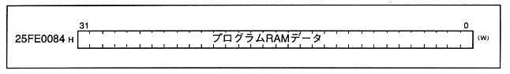
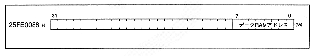
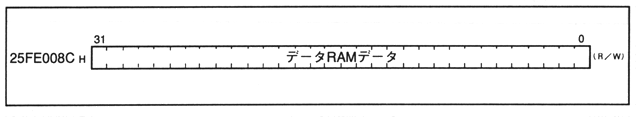

-
■ DSP program RAM data port
- Figure 1.11 shows the DSP program RAM data port map. Used as an intermediary when transferring program data from the CPU to the DSP.
Figure 1.11 DSP program RAM data port map

-
■ DSP data RAM address port
- Figure 1.12 shows the DSP data RAM address port map. Specify the data RAM address when accessing the DSP internal data RAM from the CPU.
Figure 1.12 DSP data RAM address port map

-
■ DSP data RAM data port
- Figure 1.13 shows the DSP data RAM data port map. The contents of the address indicated by the DSP data RAM address port are stored. When writing from the CPU, it is stored in the DSP data RAM, and when reading from the CPU, the DSP internal RAM data can be retrieved.
Figure 1.13 DSP data RAM data port map
